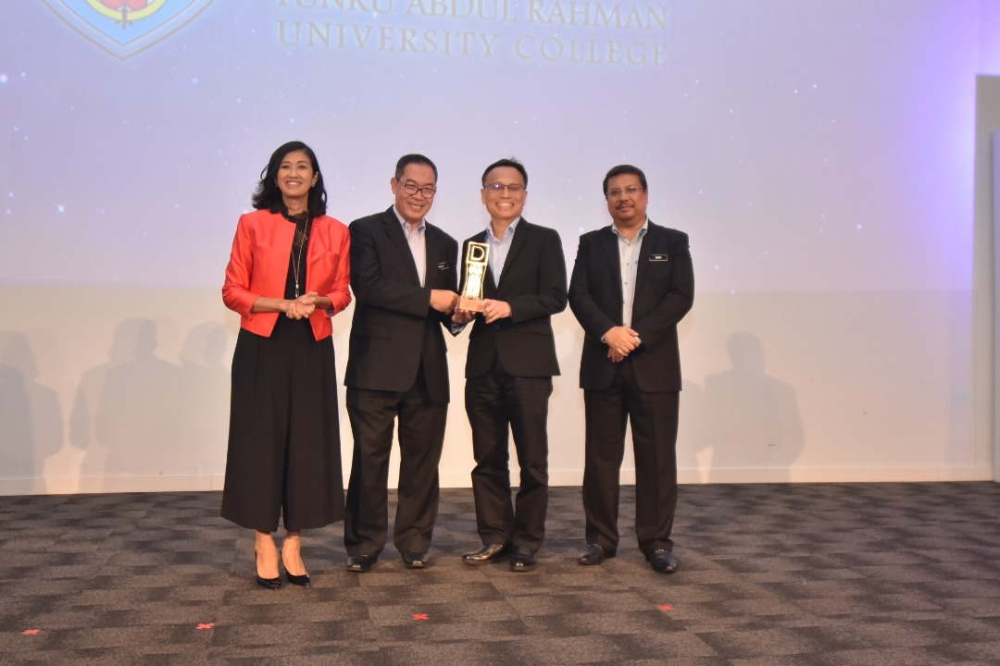

TAR UMT Awarded Premier Digital Tech Institution Status Again
Prof Ir Dr Lee (2nd from right) receiving the award from YBhg Dato’ Prof Ir Dr Mohd Saleh Jaafar (2nd from left) together with Surina Shukri (leftmost) and Ts Dr Mohammad Naim Bin Yaakub (rightmost), Deputy Director General (Planning), Polytechnic & Community College Education Department in the Ministry of Education.

The award trophy recognising TAR UMT as the Premier Digital Tech University.
TAR UMT reaffirms its status as the top institution of higher learning that delivers first-class theoretical and practical training in digital technology by retaining its Premier Digital Tech University recognition awarded by Malaysia Digital Economy Corporation (‘MDEC’) for the second time. The award was received by Prof Ir Dr Lee Sze Wei, President of TAR UMT during the award presentation ceremony on 17 June 2019.
TAR UMT first obtained the status in 2017 and was one of eight institutions of higher learning to be accorded this prestigious recognition. This year, TAR UMT is selected again as the Premier Digital Tech University which points to the top-notch education at TAR UMT that produces digital technology talents.
“The Premier Digital Tech Institution initiative is very much in line with our national aspiration in empowering human talent. The Ministry of Education is keen to work closely with other government agencies and industry partners to produce knowledgeable, skilled and values-driven talents,” said Dato’ Prof Ir Dr Mohd Saleh Jaafar, Education Ministry’s Higher Education Division Deputy Director General. “Our objective is very clear – to strengthen the quality of digital technology graduates in order to create strong talent for ICT and other industries.”
Surina Shukri, Chief Executive Officer of MDEC, highlighted the background of this initiative in her speech. “This programme was conceptualised back in 2017 and since then we have been working with 8 universities and 5 polytechnics to test and build the programme focusing on computer science,” said Surina Shukri. “These institutions were selected not only based on their global ranking, but also graduate employability rates. The initiative with our key institutions is to strengthen computer science curriculum as well as teaching. This has proved to be a milestone in our efforts to prepare and strengthen a holistic and sustainable digital pipeline.”
“Over the past 18 months, MDEC has been working closely with the Ministry of Education’s Higher Education division, more than 80 industry partners and the Premier Digital Tech universities to strengthen institutions’ career counselling via digital technology curriculum, providing visual exposure to the industry and facilitating internships and placements,” she elaborated.
Beaming with pride after receiving the award, Prof Ir Dr Lee expressed his delight that TAR UMT was accorded this recognition again.
“It is an honour to be able to receive this award for the second time as it reinforces TAR UMT’s status as the top provider of digital talents in the country while positioning ourselves at the forefront of the digital transformational shift,” he said. “Moving forward, we will continue to empower the transfer of digital knowledge and future-proof our students in preparation for the digital revolution.”
A joint initiative developed by the Ministry of Higher Education (‘MOHE’) and MDEC in 2017, the Premier Digital Tech Institution initiative aims to produce top talents and future leaders in digital technology as well as other sectors such as manufacturing and agriculture.